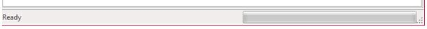

The status bar at the bottom of the CANdelaStudio window...
You can toggle visibility of the status bar via [MENU-R640].
The status bar shows details about a ribbon button when you hover the mouse over the button.

Progress Bar
For some long running operations, CANdelaStudio visualizes the progress in a progress bar at the bottom of the CANdelaStudio window.
The progress bar is shown within the status bar which can be shown/hidden using ribbon tab View [MENU-R640].
[PGB-R100] CANdelaStudio hides the entire progress bar if no long running operation is in progress.